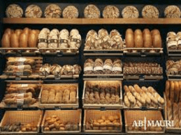
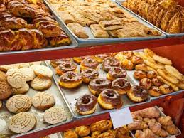

Aqui vas a poder encontrar toda la informacion que necesites
La nueva lista de precios sugeridos otorgada por el Centro Industriales Panaderos y Afines de Córdoba, entrará en vigencia a partir de éste lunes 14 de febrero de 2022.
Estimado empresario panadero, informamos a continuación el nuevo Acuerdo y Escala Salarial 2021/2022 para Córdoba y zona de influencia. El mismo contempla una SUMA EXTRAORDINARIA POR UNICA VEZ para los meses de diciembre de 2021 y febrero de 2022, la que se incorpora al sueldo conformado de los trabajadores en el mes de marzo de 2022.
Ofrecemos cursos de Panadería, Facturería, Pastelería y Pastelería Fina que, además de significar una excelente salida laboral, representan una solución al problema de capacitación de la mano de obra que requiere nuestra industria.
